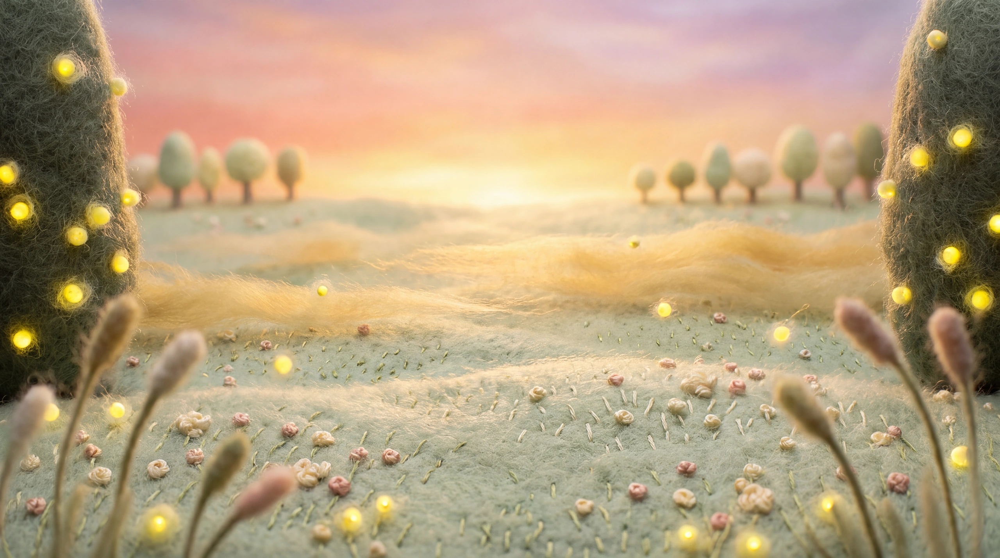
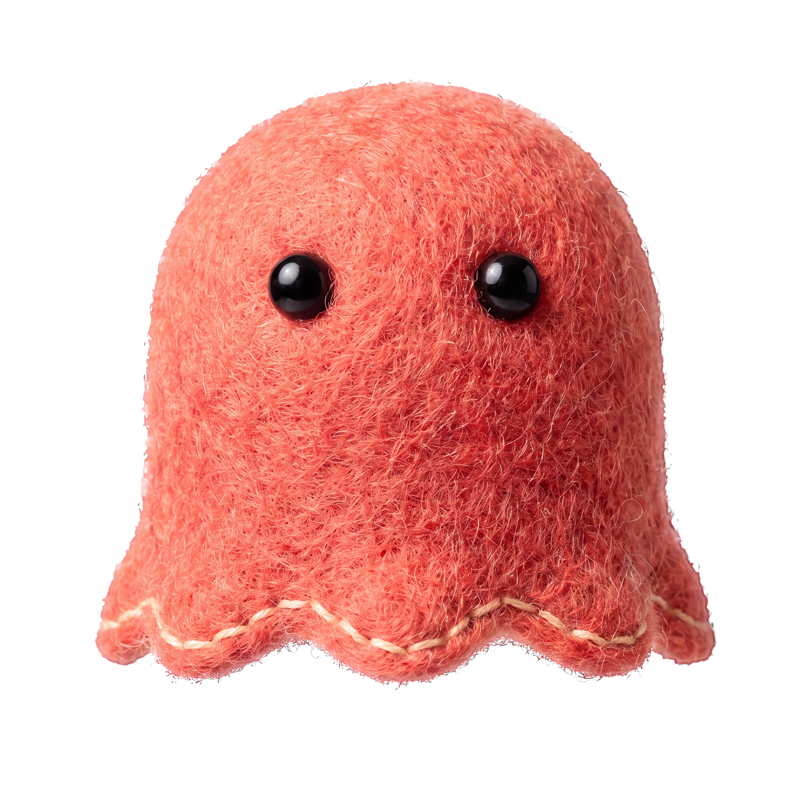

MONGLE'S LITTLE WORLD
바람의 정원
몽글을 눌러 인사해 보세요.
이름 없는 땅 · 노을 정원잔잔한 바람
정원에 빛이 들어오고 있어요.
이 환경에서는 움직이는 장면을 열지 못했어요.
01 /
같은 바람을 느끼는 시간.화면을 천천히 움직여 보세요. 몽글이 관심을 돌려요.


MONGLE'S LITTLE WORLD
몽글을 눌러 인사해 보세요.
정원에 빛이 들어오고 있어요.
이 환경에서는 움직이는 장면을 열지 못했어요.
같은 바람을 느끼는 시간.화면을 천천히 움직여 보세요. 몽글이 관심을 돌려요.